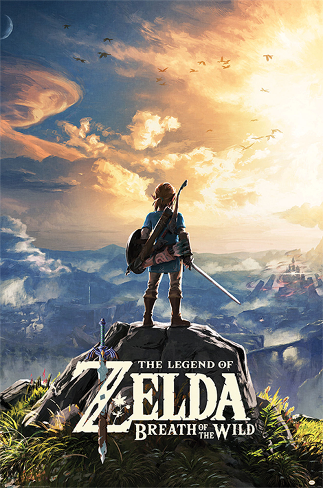

During my childhood, one of my favorite things to do was play video games. To this day I still play video games very often, and I've finally reached a point where I feel like I've played enough games to make a genuine list of my top 10 favorite games of all time. Throughout this list, I attempted to keep it as diverse as possible by not reusing any video game series. I placed this restriction because otherwise, my list would be rather boring as it would only be full of The Legend of Zelda, Metroid, and Dragon Quest. Before I get started I would like to give a few honorable mentions:
Donkey Kong Country 2: Diddy's Kong Quest
DOOM (1993)
Dragon Quest V: Hand of the Heavenly Bride
Hollow Knight
Mega Man X
Mega Man ZX Advent
Pokemon Black 2
Super Metroid
The Legend of Zelda: The Wind Waker HD
The Legend of Zelda: Twilight Princess HD
Now that the introduction is out of the way, I will be starting with my 10th favorite video game of all time!
10. Hades
Hades is not a game that one would expect me to play. I've never been interested in the roguelite genre as I don't see the appeal of doing hundreds of runs without anything of substance (such as story progression). However, Hades goes against most roguelites and provides meaningful changes after each run until you've completed the story and every side quest. This aspect alone got me to play the game, and I'm glad it did. Hades is great because of its story progression, gameplay, and permanent upgrades.
The story of Hades is the best incentive to play the game and was the one that got me hooked on it. As I said previously, after every run, there is a meaningful change that occurs until you've exhausted most of the possible changes. These changes provide a sense of progression even if you lost a run. You meet more characters after each run and learn about each more in-depth. After viewing every change, you prepare for another run and do it. One can consider the story elements part of the gameplay loop as they're a huge incentive to play the game. To add to this, once you start winning runs, the true story of Hades begins to progress, which adds an even greater reason to play. The story progression in Hades allows Hades to stand out and be great.
The game not only makes you want to play because of its story but also because of its gameplay. The controls are essentially five things. You have a default attack and a special attack for your weapon. Then you have a dash to dodge enemies, a cast that lets you use spells, and a call for a God to assist you. Throughout the run, you can enhance these parts of your toolkit to become stronger by getting boons from various Gods from Mount Olympus. In the case of the call, it is a requirement that you get a boon first before you can even use it. Each God has their own gimmick that gives you countless combinations you can try out throughout the game. My overall favorite boons were from Zeus and Dionysus because I enjoyed how the former became very strong if you kept picking his boons, while the latter was great if you combined his boons with those of the other Gods. The weapon diversity in the game is pretty good as well, as you have six distinct ones that you can utilize, albeit that you only start with the Stygian Blade and have to unlock the other five. On top of these six weapons, each has three more unlockable forms which change how you play. My favorite weapon in the game was the Aspect of Rama, which allows you to shoot in three directions with your default attack and tag multiple enemies with your special. Tagging enemies lets you hit all of them when using your default attack, even if you only hit one enemy. After completing your first ever run, you can increase the game's difficulty with various conditions that create even more gameplay diversity. The core gameplay is simple, but it works very well due to how much can be changed to keep every run refreshing and fun.
Due to Hades being a rougelite, you can permanently increase the capabilities of Zagreus: the character you play. You can do this by going to Zagreus' bedroom and activating the "Mirror of Night." From here, you can unlock many different capabilities such as an extra dash, more health, and even a revive when you die. I feel like this was one of the best aspects of the game because if you were struggling, you still had something to look forward to all the time: upgrading yourself. This feature was very motivating for me and helped push me to keep playing until I completed my first ever run. Without this feature, I think I would either not like this game as much as I do or would have dropped it before completing it.
Even though I don't typically enjoy the rougelite genre, Hades was a game that completely captivated me. I enjoyed playing through it so I could see the plot and side quests unfold. The gameplay stayed fun the entire time due to the amount of diversity implemented through boons, weapons, and difficulty options. Being able to upgrade your character was the cherry on top to motivate you to keep playing even if you were struggling. Hades is a superb game that I would recommend to anyone as I enjoyed it to completion even though it's from a genre I don't like.
9. Mega Man Zero 3
Mega Man Zero 3 is what I consider to be the pinnacle of the Mega Man Zero series, and even Mega Man in general. I played this game on the Mega Man Zero/ZX Legacy Collection, which enhanced my experience because of the optional Save-Assist feature; this essentially gives you infinite lives and a bunch of checkpoints that you will start at when you die. Zero 3 is a fast-paced and challenging action game, making it very enjoyable, and aspects that stand out to me about it are the weapons, customizable chips, and Cyber-Elf abilities.
Zero 3 has four weapons you can use at any time: the Buster Shot, Z-Saber, Recoil Rod, and Shield Boomerang. While playing, you can only use two at a time, but you can always change them at any time by opening the menu. The Buster Shot shoots things from afar, and the Z-Saber excels in close-quarters combat. You can use the Recoil Rod in any direction, and if you use it on the ground, it acts as a pogo stick. The Shield Boomerang can reflect projectiles shot at you, and you can also throw it to attack enemies. I love having the ability to use two of these weapons at a time because it makes the flow of the game feel right; for example, if an enemy is far away, shoot them with the Buster Shot and if they get close, slash them with your Z-Saber. These weapons are essential to Zero 3 being enjoyable as they provide much gameplay variety and depth that otherwise would not be there.
There are many customizable abilities throughout the game in the form of Chips. There are 15 chips in total with three types: Head, Body, and Foot. You can only equip one chip per type, which lets you have three chips that change your abilities at a time. Body chips are the most important as they allow you to change your element, most notably thunder, flame, and ice. These let you defeat an enemy quicker by using their weakness; thunder beats flame, which beats ice, which beats thunder. The other chips are great as they provide fun abilities. You can get one that lets you double jump, one to dash through enemies, one to run faster, etc. The chips in Mega Man Zero 3 give you a way to become stronger and adapt to different situations.
Cyber-elves act as upgrades or abilities you can utilize. There are two types of Cyber-elves, fusion, and satellite. If you use a fusion elf, they will die, and you will permanently gain their abilities or use them if its effect is not an upgrade. However, doing so will lower your mission score, which means that this is discouraged. On the other hand, you can activate satellite elves to have their effects without killing them, but you can only have two of these at a time. I appreciate this system because it shows that the developers don't want you to kill all the elves to have their abilities, but the choice is yours. The Cyber-elves in Mega Man Zero 3 is an excellent upgrade system that benefits the game by letting you choose your own path.
Mega Man Zero 3 is an impeccable game that pushes its series to the limit, which any sequel should do. It has four great weapons that each have their use and is enjoyable to wield. The customizable chips provide you with many neat abilities, with the element chips creating extra depth by allowing you to fight enemies with their weaknesses. Cyber-elves are a great upgrade system as they display the developer's intent but offer you the choice to follow or go against it. This game is incredible, and I personally think it's the best game in the entire Mega Man series.
8. Tales of the Abyss
A very story-driven game that I love is Tales of the Abyss. This game is an action JRPG where you get to fight your battles instead of standard turn-based combat. While I did enjoy the battle system, other aspects of the game stole the show for me. Tales of the Abyss became a game that is dear to me through its story, skits, and optional content.
The story is easily my favorite part of the game because I feel like it was pretty ambitious and well-executed. In this game, you play as Luke fon Fabre, the nephew of the king of the Kingdom of Kimlasca-Lanvaldear. This Kingdom is at odds with the Malkuth Empire after Malkuth became independent of Kimlasca and conquered nearly half the world. Throughout the game, the overarching goal is to resolve the conflict between Kimlasca and Malkuth. However, many other problems arise in the game. A poisonous gas called miasma, which emerges due to events in the game, will kill everyone if not addressed immediately. Then there are the villains who show up throughout the game until the bitter end: the Six God-Generals and their leader Van Grants. As you deal with these villains, you realize that each of them is much more humane than you might've initially assumed, which allows you to be sympathetic or empathetic toward them. I love this because the villains become characters with motives that you understand whether they're right or wrong. The world is vast, and the story takes advantage of that as you learn more about everyone's struggles, with each region playing key roles until the end. Not just that, but the main cast is fantastic; I especially enjoyed how pretty much all of them developed until the end, with Luke changing the most over its course. The story of Tales of the Abyss is lengthy with many components, but that's why it's so enjoyable and one of its strong points.
Characters in modern JRPGs make or break a game; in Tales of the Abyss' case, it made it. One of the best ways this game gets you attached to each character is through skits: a conversation between the main characters with portraits showing their emotions. Before speaking more about this, I would like to mention that the English dub doesn't have voice acting, which is a shame, but it never bothered me much. I enjoyed these skits a lot because they showcased the personalities of each character well while keeping you in tune with the story. Another thing I liked is that these are non-intrusive; there's a prompt that says you can activate one, and it's up to you if you choose to do it. Also, if you start a skit and decide you don't want to watch it anymore, you can skip it. Overall, these were a great inclusion to the game as they help attach you to the main characters more than otherwise.
In most cases, I feel like too much optional content bloats a game, but for Tales of the Abyss, I loved it. There are plenty of things to do, such as getting costumes for all your characters, fighting optional bosses, getting every cooking recipe, etc. I've never done everything in this game, and I don't ever plan to, but I do feel like all of this content adds to the game. It brings the world to life as you search every nook and cranny to find these things; not just that, but it's cool to replay the game every once in a while and find something you never knew existed. I will be the first to admit; that if you are a completionist, you should play this game with a guide because some things are very obscure. Not just that, but you can miss certain events or items forever. Even though it has these flaws, I appreciate Tales of the Abyss' optional content due to the life it brings to its world.
Tales of the Abyss is a game that just clicked with me. I enjoyed the story the entire time because of how many things were happening in it. The skits, while not for some, were something I looked forward to so I could learn more about the main characters. Optional content is a boon for this game (unless you're a completionist) because it truly brings the world alive. For some final clarity, not that it's needed, Tales of the Abyss is my eighth favorite game of all time.
7. Super Mario Odyssey
Super Mario Odyssey is my favorite Mario game of all time. However, I do have to admit that I have yet to play Super Mario World and Super Mario Galaxy 2. With that said, what I think makes Super Mario Odyssey so great are three things. These are the controls, the captures (transformations), and the number of Power Moons to collect.
The controls of this game allow Mario to move the freest he's ever been. Mario's basic movement keeps many staples from previous games, such as his long jump, triple jump, and backflip. None of these things stand out as differences, so why is Mario Odyssey's movement so good? The answer is because of Mario's companion Cappy, who serves as his hat for the game. Cappy allows Mario to do many maneuvers that he previously could not. For example, Mario can now perform a sideways somersault, throw his hat, dive towards his hat, land on his hat, and then roll quickly along the floor in a few seconds. This simple addition makes traversing across all the different areas in the game constantly fun and engaging because you can move so fast that you don't care if something is far away.
A staple of Mario games is the power-ups that Mario can use, such as the well-known Fire Flower. Mario Odyssey takes a unique approach to Mario's power-ups by allowing Mario to transform after capturing an animal, enemy, or object with Cappy. This mechanic allows for copious abilities you can access at any given time from the environment. I think the greatest strength of this system is that you can make many power-ups without creating new items. Rather than creating some power-up that allows you to be a frog, you can capture a frog and become it. This simple mechanic allows the game to become much more diverse than it would be with Mario's regular power-up system.
The amount of Power Moons in the game is a controversial topic. Throughout the game, you can collect 880 unique Power Moons, and you need these collectibles to access different locations in the game. One side says that there are too many, while the other states that the amount of moons is reasonable. Personally, I agree with those that like the number of moons. In fact, I think that the decision to have so many moons enhances the game. The strongest argument for keeping all the moons is that it allows for more replayability compared to a game with fewer moons. Once you beat the game and put it down, you can continue collecting hundreds of Power Moons across the various worlds, or you can start a new playthrough and collect the moons in an entirely different order than your first time. This game needs to have as many moons as it does because it incentivizes you to play the game more at some point later down the road.
I think Super Mario Odyssey is easily Mario's best adventure yet. It has fast-paced action, plenty of transformations that act as power-ups, and many collectibles in every world. This game is one that any Mario fan or 3D platforming fan should experience.
6. Dragon Quest XI S: Echoes of an Elusive Age - Definitive Edition
Dragon Quest XI is a game that I expected to enjoy as I'm a fan of the Dragon Quest series. However, I did not expect that it would hook me to the point that the only thing I did during my free time was play it until I completed all three acts and every side quest. I loved everything about this game. To pick a few things to talk about, I would say my favorite parts of this game were the characters, the world, and the second act.
Every single main character in this game is absolutely fantastic. The party members in this game are Erik, Veronica, Serena, Sylvando, Jade, Rab, and later someone unexpected. Erik is the thief who becomes your first party member. Veronica and Serena are twins where the former is adamant about what she wants to do (and literally cursed to be short), while the latter is much more reserved and goes along with what her sister wants to do. Sylvando is a man who strives to make the whole world smile. Rab is the main character's grandfather, a former king (also a perv), and Jade is a princess who helped the main character survive when they were a baby. Now, I know that all of this sounds very basic, and it is. However, the execution of each character throughout the game is expertly done: via cutscenes, party dialogue, and plot developments. An example off the top of my head that illustrates this is from the very beginning of the game. Here, you and Erik attempt to escape from Heliodor Castle's dungeon after being imprisoned by King Carnelian; this is because he learns that you are the Luminary, whom he believes is the cause of all calamity. At the end of the escape, Helidor's guards corner you on the edge of a cliff. There is no way to escape except by jumping into the water below. Erik then turns to you, saying, "Let's do this. I believe in you. I believe in the Luminary...I don't have much choice". Both of you then, together, at the same time, jump into the water at the bottom of the cliff. To keep this section from rambling on too much about the characters, I would like to say I also liked Jasper and Hendrik, who are knights of Heliodor and play crucial roles throughout the entire game. The characters of Dragon Quest XI all have their own charm, and you become more attached to each of them as the story unfolds and you see all of their struggles and interactions.
Erdrea is the name of Dragon Quest XI's world and is a joy to explore. Once you set out into the world after the opening sequence, you get a horse, which helps tremendously in traveling the world. The game isn't open world, but it gives you plenty of areas you can explore when you reach different sections of the game, which allows you to choose to do things other than the main story. I love how each area in the game is so distinct. For example, Heliodor is the standard kingdom you envision as soon as you think about one. But then there are areas like Octagonia, which is all about their masked martial arts tournament (and later gambling). Something else that makes exploring Erdrea so fun is that you can choose to fight which monsters you want to. Due to this, the flow of exploration stays strong as you only get into battles by your choice (though sometimes you may get unlucky and get chased down). The world of Dragon Quest XI is enjoyable due to its quick modes of transport, diverse areas, and the ability to choose what fights you want.
Act 2 is, simply put, phenomenal. There were so many things in this part of the game that I did not expect at all. One of those things was Hendrik joining your party as a permanent member and apologizing for thinking that the Luminary was evil and chasing him across Erdrea. In retrospect: I probably should have expected that as you had an uneven number of party members after including yourself: and because Hendrik wasn't evil, but I digress. In this act, you play through each member's specific struggle before meeting them once more, except for the twins, and for a good reason. Without getting too much into it, Veronica died after the events of Act 1. I found this very shocking as this is a Dragon Quest game, and usually, every main character gets a happy ending. Instead, this flips the entire script upside down by depressing every party member, especially Serena. This event is pivotal for Serena's growth, as she can no longer follow her sister; and now has to do things for herself. Serena develops into a much stronger person by the end of Act 2. This act was fantastic because it showed each main character's struggle, each main character's development, and because it was full of events that I did not expect to happen.
Dragon Quest XI is one of the best JRPGs of all time, if not the best. Every main character in the game is fun to watch how they develop and interact with one another. The world offers plenty of exploration opportunities and amplifies exploration by providing fast ways to travel as well as optional battles. Act 2 is a masterclass in storytelling, full of things one would not normally expect from a Dragon Quest game. Dragon Quest XI is a game that I'm happy I spent the time playing because it was so magical.
5. The Legend of Zelda: Breath of the Wild

Being a Legend of Zelda fan since having played my first Zelda game, Skyward Sword, I was very excited to hear about Breath of the Wild when first announced. Many things about the game stood out in the trailers. They showed Link using a parasail to glide through the sky, Link being able to cut down trees, and how vast this world is compared to previous Zelda titles. I always looked forward to eventually playing this game, and I was finally able to in 2021. It doesn't need to be said, but I will anyway; I enjoyed every second of playing Breath of the Wild.
Breath of the Wild is an open world game that lets you explore anywhere you want, but it doesn't initially start that way. In the beginning, you are on the Great Plateau, and you essentially need to complete the tutorial. Afterward, you can progress to the real meat and bones. The tutorial is about finding these ancient buildings called shrines, which bestow you runes that increase the capabilities of your Sheikah Slate that you received at the very start. Another thing to note about these shrines is that they give you Spirit Orbs used to upgrade your health or stamina. At the end of the tutorial, you obtain a paraglider; the game is then blown wide open, and you have the freedom to go wherever you want. To complement this: there are Sheikah Towers, which serve as landmarks you can teleport to as long as you have activated them. The best aspect of the game is how this allows you total freedom across the map. If you headed off to the Gerudo Desert initially like I did in my first playthrough, but then decide you want to go elsewhere while keeping your progress: you teleport back to the Great Plateau after activating a Sheikah Tower in the desert. Exploration is Breath of the Wild's bread and butter, and it handles it masterfully.
Shrines are the biggest reward for exploration, and in total, there are 120 of them to be found throughout the game. In terms of what each shrine holds, there are three archetypes that they can fall under: blessings, tests of strength, and puzzles. The blessing archetype has nothing for you to do except to receive your Spirit Orb, which typically occurs after you had to solve some puzzle outside of the shrine. The tests of strength have you fight a Guardian Scout of one of three difficulties - minor, modest, major. The puzzles make you solve something before you obtain your reward. I loved finding each of these shrines and seeing what was within each of them. My favorite shrine was the one on Eventide Island; you had to figure out a way to defeat enemies and solve a puzzle after losing all of your equipment other than the Sheikah Slate and paraglider. Shrines are key in Breath of the Wild as they are one of the main motivations to explore.
The Sheikah Slate plays an integral role in making Breath of the Wild great, as it provides a single tool with multiple purposes that can solve various puzzles in numerous ways. The slate offers four diverse functions: Magnesis, Remote Bomb, Stasis, and Cryonis. Magnesis allows you to move metallic objects. The Remote Bomb can either be round or cube-shaped; then it can either be thrown or placed and finally detonated with the use of the L-button. Statis lets you stop an object in time and apply kinetic energy to it to propel it or shift its placement. Finally, Cryonis provides the ability to create ice pillars from water. These abilities are essential in keeping the game fresh as you can use them in conjunction with one another to solve puzzles or by themselves. An example of utilizing multiple abilities at once is how you will find areas full of water and naturally use Cryonis. Then you can use Magnesis, which might show you a metallic plank or box underwater that you can use for something else. The general capabilities provided by the Sheikah Slate help enhance Breath of the Wild's world as it gives a strong foundation for puzzle design.
Breath of the Wild is a game worthy of experiencing due to the freedom of what you can do that it offers. After the tutorial, you have the right to go wherever you please. The Shrines across the map offer you a fun incentive to search far and wide. Puzzles in the game are all expertly crafted on the abilities of the Shiekah Slate. These core components combined made Breath of the Wild an extremely memorable game.
4. Donkey Kong Country: Tropical Freeze
Tropical Freeze is everything one could ask from a 2D platformer. The game is always fair with everything it asks you to do while providing a good challenge the entire time. The controls are tight and responsive, the soundtrack is ear candy, and each island oozes creativity. If I had to pick the best parts of this game, I would say they are the creativity of each level, the collectibles, and the overall challenge the game presents.
The level variety in this game is astounding. There are six main islands that each have its theme to them. Not just that, but within each of these, there are gimmicks you might not expect. For example, on the first island, Lost Mangroves, the theme is mangrove trees, but there are levels where you're ziplining through a shrine or can only see yourself and your surroundings as a silhouette. No island is a drag to play through because they all differ so much from one another while staying at top quality. The levels of Tropical Freeze are one of its greatest strengths that sets it apart from other 2D platformers.
The collectibles in Tropical Freeze are the KONG letters and puzzle pieces. After acquiring every KONG letter on an island, you can unlock a hidden stage on the island. After completing each, you gain access to the secret world, Secret Seclusion, which holds three more levels to complete. Puzzle pieces unlock images that you can view in the Extras menu. Another thing to note about puzzle pieces is that they do not affect the percentage of completion in the game; therefore, they are optional. These collectibles enhance Tropical Freeze because they add replayability through incentives and are an extra goal.
Challenge is subjective to the player, but I feel that Tropical Freeze does present a solid difficulty that is consistent the entire time. There will be sections where you will die and have to keep repeating them. I had some trouble with the minecart and rocket barrel levels; these levels required you to adapt quickly to your environments, or else you would instantly die or take a hit. For the hardcore players, there is a hard mode. Here you can't get hit once, and there are no checkpoints throughout the entire level. I love the difficulty in this game because it works in its favor; it keeps it engaging. The challenge was executed perfectly and propelled Tropical Freeze to great heights.
I believe that Tropical Freeze is the best 2D platformer ever made. Each world is distinct from one another, as is every level. The game provides incentives to replay it through the KONG letters and puzzle pieces. Not just that, but the game has a consistently fair challenge the entire time. If you are a fan of platformers and haven't played this game, you are doing yourself a disservice.
3. Metroid Prime
Metroid Prime is the most atmospheric game I have ever played. I played this game on the Metroid Prime Trilogy so I could use the motion controls provided by the Wiimote. I'm happy I made this decision because the natural Wiimote aiming controls helped me get lost in the world. When playing, it feels like you are on planet Tallon IV instead of Samus. The game manages to be beautiful and immersive despite being nearly 20 years old at the time of this review. The world is intricate: it's full of things to find and puzzles to solve. Metroid Prime is fantastic, and three things stand out to me that make it so. These things are the world, power-ups, and music.
Tallon IV is five main areas: Tallon Overworld, Chozo Ruins, Magmoor Caverns, Phendrana Drifts, and Phazon Mines. Each has a specific theme: rainforest, desert, magma, snow, and quarry. The execution of each area is masterful due to the emotions and mystery they invoke. A great example of this is my favorite part of the game when you've gotten to Phendrana Drifts and climbed up a bit. Here, a cutscene shows an ominous figure's shadow on the ground as it's flying. The camera then pans up as the creature fades into the distance. This cutscene is perfect as it caters to two audiences: Metroid fans and first-timers. Metroid fans know the silhouette and become excited to find this creature, while first-timers are alarmed by it and become wary of the impending encounter. Metroid Prime's world is impeccable due to events like this constantly making you wonder what's next and where.
The purpose of power-ups in the Metroid series is to open the game more as you get farther; this enhances the quality of Metroid Prime's world by making you wonder about things. You wonder what you need to pass certain obstacles, such as purple-colored doors. You then wonder when you will get such a thing. Is it nearby? Will I find it three hours later? Afterward, you remember this event and where this obstacle was. As you play, you'll eventually find the power-up. You'll then remember each obstacle you encountered and feel an urge to return and clear it. I recall that when I got the Wave Beam, I just ran around the world, opening every purple-colored door that had been taunting me. The power-ups in Metroid Prime make the game come alive and memorable.
The music in Metroid Prime is perfection. If power-ups make the world come alive, the music makes the atmosphere come alive. Each song complements each area to a tee. Tallon Overworld's theme is calm and serene with a hint of mystery, fitting for the rainforest where you start. Magmoor Caverns' music is intense and foreboding, and Phendrana Drifts is soft and peaceful. There're so many fantastic tracks that I implore you that if you haven't, listen to Metroid Prime's OST. There is not a single track that is out of place. Not one that you wonder why a specific area or situation has it playing. The soundtrack of Metroid Prime is one of the best video game soundtracks of all time, if not the best, and it plays a massive role in making Metroid Prime timeless.
Metroid Prime is a masterpiece. Tallon IV is a diverse planet with well-thought-out areas, each giving you a unique feeling. The power-ups immerse you in the world by making you think about what you need to do and remember where things are. The music creates an atmosphere that makes each area stand out and memorable. There's nothing else to say except that Metroid Prime is one of the best video games ever.
2. Kid Icarus: Uprising
Kid Icarus: Uprising is a game that I can't describe as anything but full of love. Being made on the 3DS, you wouldn't think it would look that good, but it's beautiful and has a great art direction. The controls might not click with some or be painful due to the 3DS being tiny and your hands getting cramped; however, if it does click with you or doesn't bother you, you will experience nothing short of a masterpiece. My favorite areas where this game excels; are the chapters, the balance of humor and seriousness, and the variety of weapons and powers.
The chapters serve as the levels; a new chapter unlocks after clearing the previous one, with each chapter having its own plot that furthers the overarching story. On a side note, I love the names of each chapter; and the artwork provided for them, as it gives a glimpse into what's coming. The chapters are so diverse from one another while staying coherent to the story. In one chapter, you'll be going to a palace underwater, and in the next, you'll go to space to raid a pirate ship. Each chapter is incredibly well-designed to play through regularly, but they are also full of secrets and alternate paths you'll find through sheer curiosity or replaying them. The variety of enemies in the game helps each chapter distinguish itself even more. The characters also bring more oomph to each chapter as you meet new characters as you go; you'll see how they interact with you and one another. Every chapter is well-executed which is key to the greatness of Kid Icarus: Uprising.
The balance between humor and seriousness in this game is top-notch. Throughout every chapter, every character will engage in conversation with one another. The standard flow is a constant mix of humor and being serious, with the end of the chapter just being seriousness. These interactions are enjoyable to witness and elevate this game to a place it wouldn't be without them. One of my favorite interactions happens in Chapter 2, where Pit, the character you play who is an angel, meets a character named Magnus. Here you can find a room with a hot spring and see a hilarious conversation between Pit and Magnus. The gist is that Pit enters the hot spring fully clothed, and Magnus questions it; Pit then replies that he follows the code of conduct to always be ready for duty; and because he doesn't want to steam his sacred buns. At the end of the chapter, you have to fight Dark Lord Gaol, a close friend of Magnus. This game weaves humor into its writing with ease while staying genuine in moving its plot along, which is one of its greatest strengths.
The variety of weapons and powers is essential for the gameplay to stay fresh. For weapons, there are nine categories, with 12 weapons in each. These categories are blades, staffs, claws, bows, palms, clubs, cannons, orbitars, and arms. Each type has a unique playstyle, with the weapons in each all being diverse from one another; what this does is allow for a player to find a playstyle they enjoy without detracting from the experience. On top of this, weapons can have different modifiers to change their attributes which diversifies them even more. For example, one pair of Beam Claws may have five stars in ranged and one star in melee, while another will have three in ranged and three in melee. On the flipside, powers are something that you can activate while playing. There are 62 powers in the game, with each fulfilling a different niche. There are powers to recover health, jump into the air, fire a laser, etc. The strength of each power depends on its level, with one being the weakest and four the strongest. To equip these powers, go to the Gear menu and click Powers; from here, you'll have to fill out a puzzle of what powers you want. The better the power in general or because of level, the more space it will take. For those that aren't the best at fitting together a puzzle or those that don't like it, the Autofill Powers button will do it for you. The variety of what you can use helps you find a specific playstyle you enjoy or diversify how you play; this enhances Kid Icarus: Uprising to be a better game than it already is.
I will always cherish this game. Each chapter tells its own plot while adding to the grand story. The way the game balances its humor while staying serious is perfect. There is plenty of variety throughout the game with its weapons and powers, which allow you to carve out a playstyle for yourself. Kid Icarus: Uprising is easily one of my favorite games, and I think it is a masterpiece.
1. Sekiro: Shadows Die Twice - GOTY Edition
Sekiro is my favorite game of all time. The game is constantly challenging but is always fair; every time you lose, it's your fault. The world is intertwined masterfully with you finding areas from places you've already been and connecting them in ways you might not expect. There are plenty of collectibles and upgrades in the game to acquire, which helps make it feel whole and provide an extra sense of progression. Sekiro is an incredible game, and what makes it stand out is its gameplay, boss fights, and well-crafted areas.
The gameplay is perfect. It's fast-paced, constantly engaging, and satisfying because you see your improvement as you play. The fundamentals of Sekiro's combat are simple: you can target an enemy, attack with your sword, parry or dodge attacks, use items, and utilize your prosthetic arm. The prosthetic arm is how Sekiro provides you with gameplay diversity and clever ways to fight enemies or bosses. For example, there is a prosthetic called the Shinobi Firecracker, and it allows you to startle beasts and regular enemies. If you ever meet an enemy that is troubling because of how quickly they move or for some other reason, you can use this tool to stop them in their tracks. Another aspect of the prosthetic arm is that it acts as a grappling hook that you can use to traverse the world; this allows you to find unique ways to tackle a situation and is just fun in general. On a side note, you can heal in this game by utilizing your Healing Gourd, which you acquire some time at the very beginning of the game. The mechanic in this game that makes it unique is its Posture system which both you and your enemies have. Everyone has a posture gauge that appears on the screen when someone has deflected an attack or taken damage and when someone's gauge reaches the max, their posture breaks - though the player can avoid this. The player's posture will never crumble if they perfectly deflect and dodge incoming attacks, even if they are on the brink. When an enemy's posture breaks, you can perform a Deathblow on them, killing them instantly. I love this mechanic because it makes fights so fast as you only have to break an opponent's posture to win. Sekiro's gameplay is the cornerstone of the game and is spectacular.
Boss fights in Sekiro are spectacular; every boss has a wide variety of attacks they can use against you, and it just feels rewarding learning their patterns and how you can decimate them once you do so. What makes the process of these fights have this feeling is how each boss almost feels like an insurmountable obstacle; they will constantly beat you down, which some can do in a mere few seconds until you become better than them. This feeling is amplified by how many bosses, if not all, can take multiple Deathblows. Bosses have special attacks called Perilous Attacks, which you must dodge or counter perfectly, upping the stakes even more. These fights are frustrating but fun due to this. I would also like to say that each boss arena has a great environment which makes each battle better as it sets the atmosphere. One of my favorite fights in the game is against the Corrupted Monk in Mibu Village; I love the ominous atmosphere of the arena as it's in a place full of zombie-like villagers, and the fight plays out as if you're dancing with the monk. Sekiro's boss fights are impeccable and are a massive reason why the game is so great.
When I think about areas in Sekiro, two things come to mind: cohesive and full of stuff to do. Each is quite linear, yet there are plenty of things to do in all of them. For example, there are prayer beads that you can find that increase your vitality (health) and your posture after combining four of them; you can also acquire these by fighting mini-bosses scattered all over. Another collectible that is satisfying to find in these areas is prosthetic tools so that you can diversify your abilities. I love how everywhere has a sense of mystery; it makes you hesitant about going further while simultaneously making you want to explore. My favorite area is easily Fountainhead Palace. This place is just so beautiful with its design. The water is so gentle, the trees are enamoring and towering, and the architecture of the buildings fits well with the environment. But then you realize there's something off about this place - there are nobles who are fish-like, skilled warriors who fight you as soon as they see you, and a giant carp underwater. Sekiro's fabulous areas bring the game to life.
Sekiro is a game that I loved playing the entire time, to the point that I acquired every Steam achievement possible. The gameplay, in my opinion, is unrivaled by any other game and is incredibly fun. The bosses are massive obstacles throughout the game that serves as a test of skill you want to overcome. Each area is intriguing, jam-packed with content, and a joy to explore. I have no problem saying Sekiro is my favorite game of all time, and it most likely won't be dethroned anytime soon.